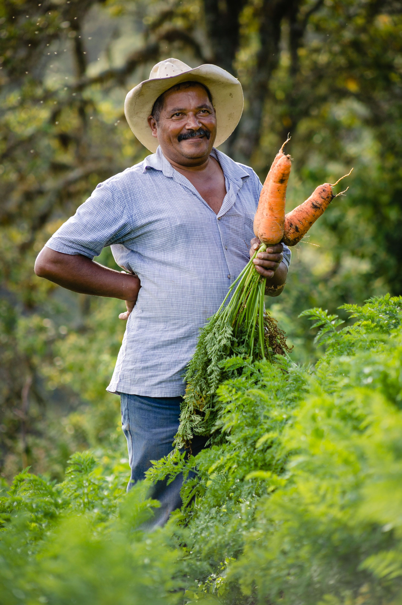
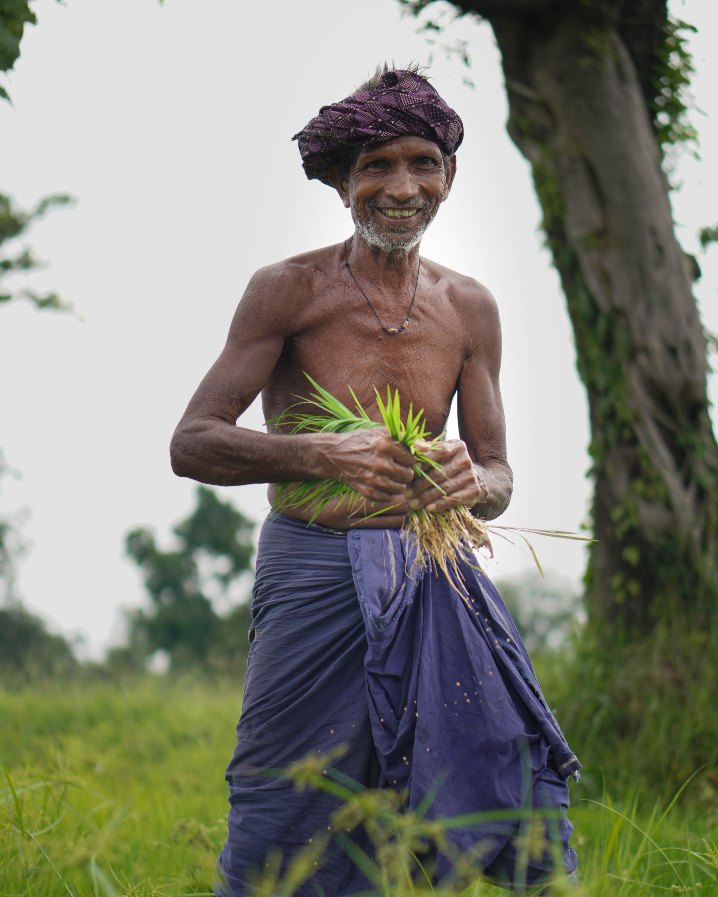
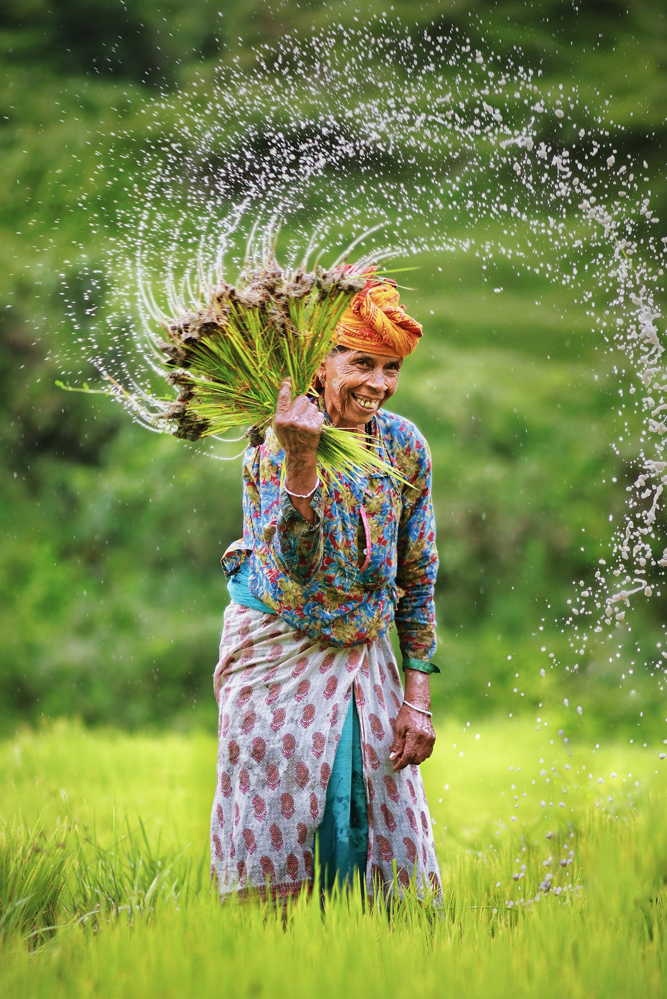
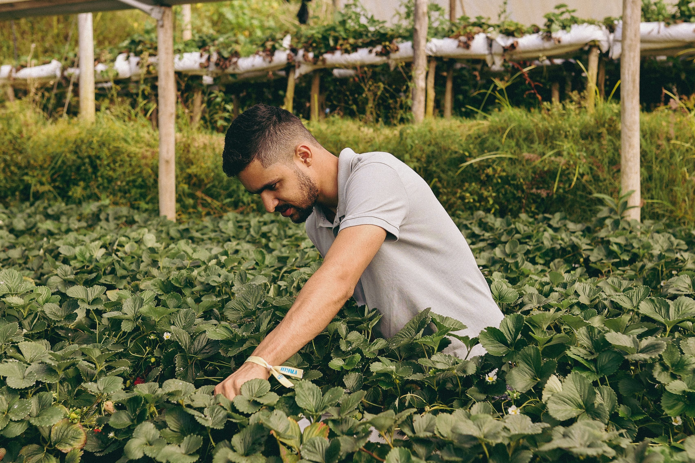

From a single-acre pilot farm in 2008 to a nationwide agri-tech company serving over 1,200 farmers — this is the Stackly story.

Our mission is to make precision agriculture accessible to every Indian farmer — from small-scale subsistence growers to large commercial operations.
Our vision is a food-secure India where technology empowers farmers to be profitable, resilient, and environmentally responsible stewards of the land.
Our team brings together agronomists, engineers, data scientists, and farming practitioners united by one purpose.

Founder & CEO
Ph.D. Agronomy, IIT Madras. 20+ years in crop science and farm automation.

Head of Agronomy
MSc. Agri-Science. Specialises in organic transitions and soil health restoration.

Drone & Tech Lead
Engineering background with 8 years deploying agri-drone fleets across South India.
Market Linkage Officer
Connects farmers directly to retail chains, exporters, and FPO networks.
Whether you're a small farmer or a large agribusiness, we have a solution tailored to your land and goals.